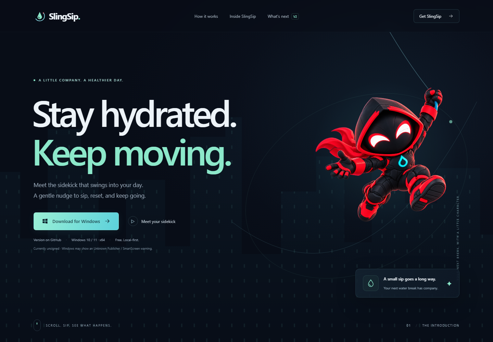
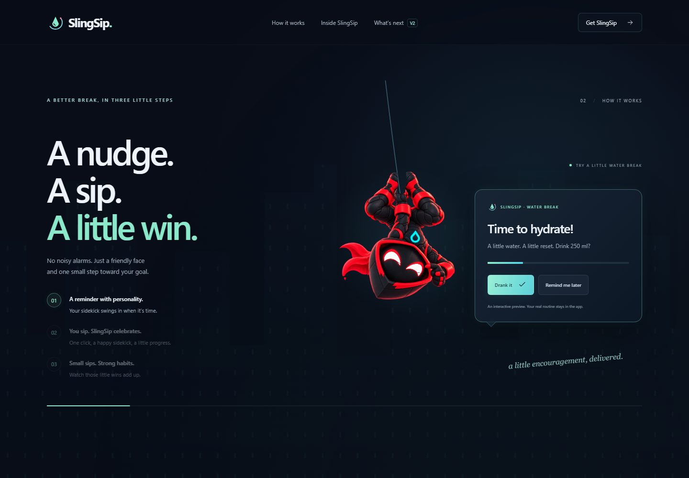
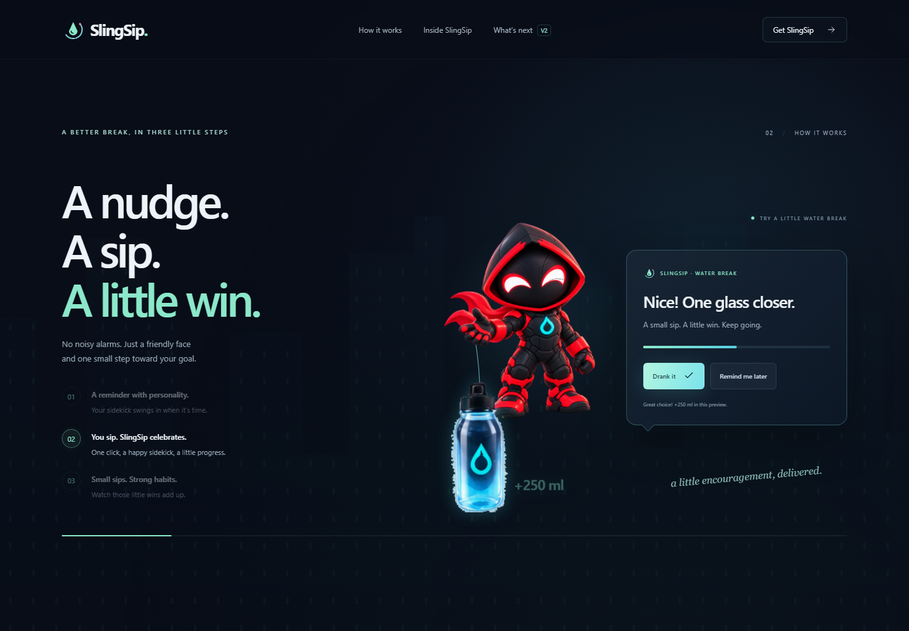
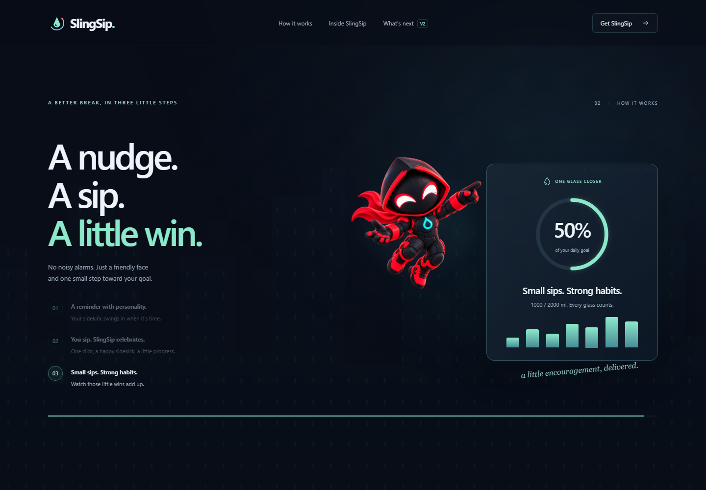
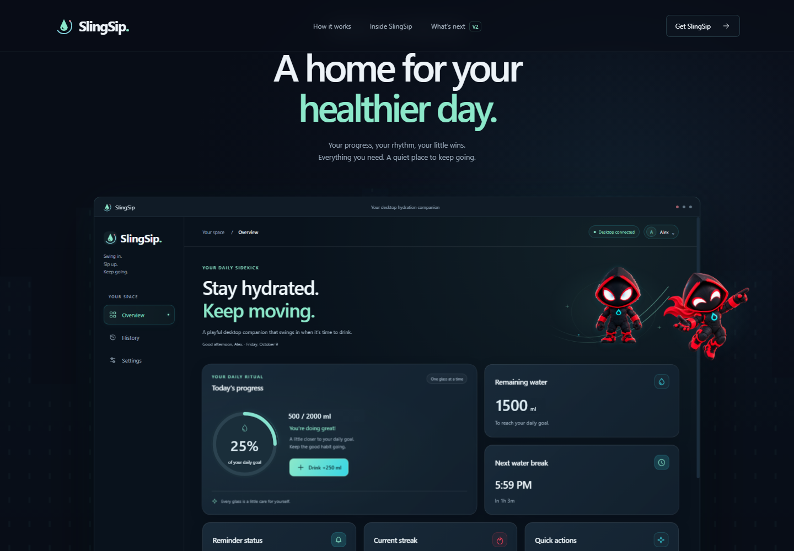
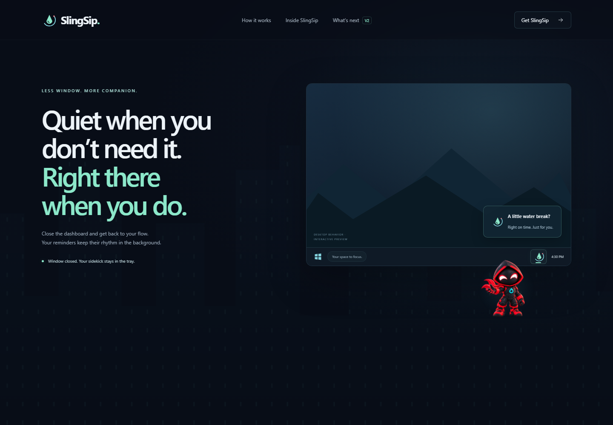
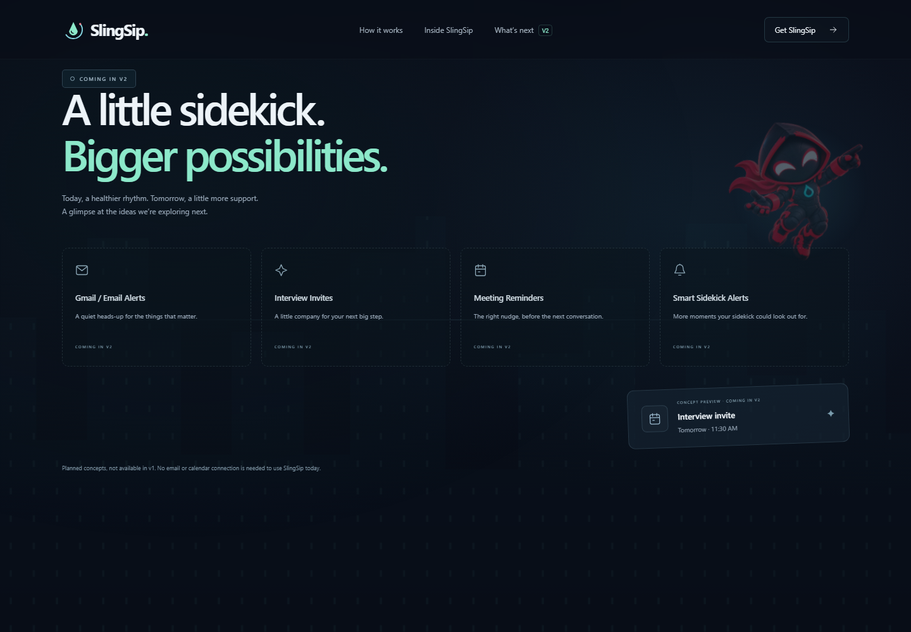
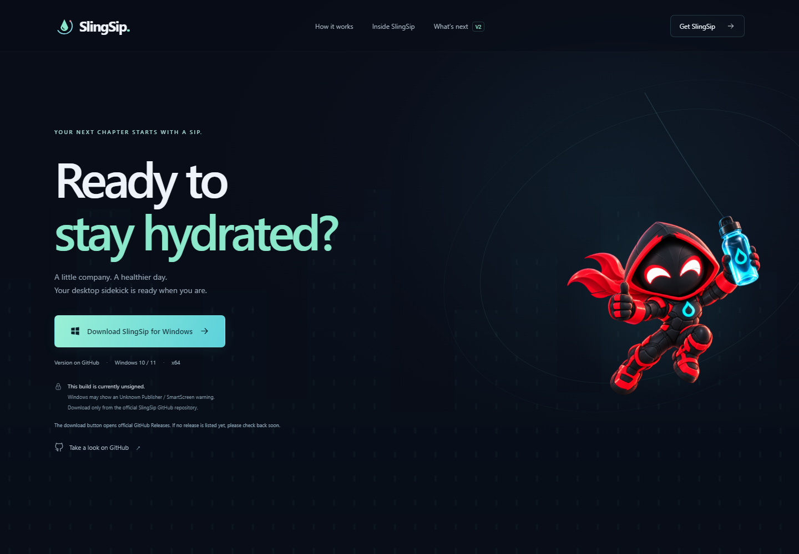
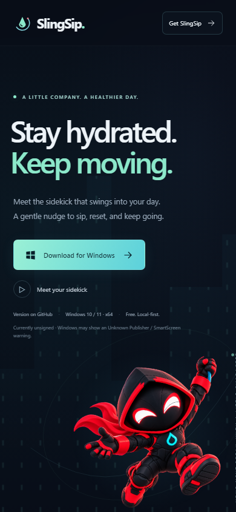

Local production-preview captures, 12 October 2026. This gallery reviews animation changes to the existing landing page. Desktop application code, artwork originals and hydration data are unchanged. Nothing has been deployed.
Implementation and validation report · Capture/performance evidence
The GitHub latest-release response was intentionally mocked as unavailable. Version text stays unverified and download links retain the official GitHub fallback; these captures do not imply a published release.
The nine curated PNGs below are retained review evidence. Optional local motion recordings are Git-ignored and are not distributed with this gallery. Review continuous motion in the running page; still images do not certify physical-device frame rate.








